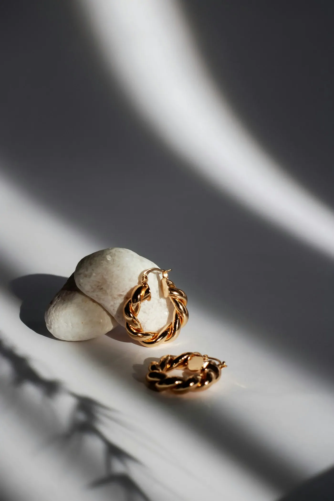
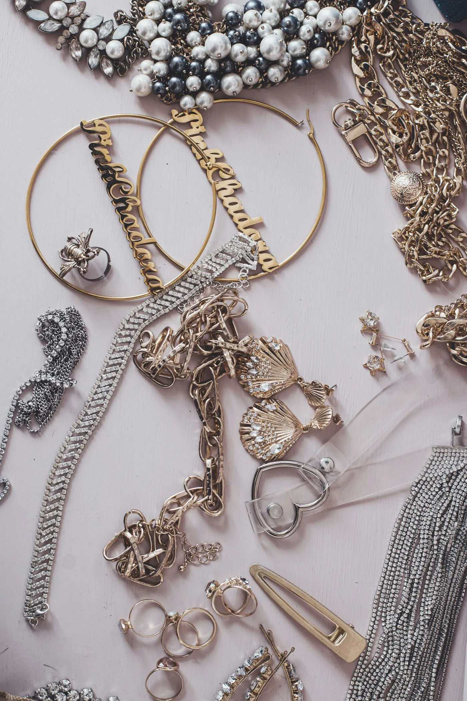

Kiezen
Je bekijkt samen je oor of de plek die je in gedachten hebt, en kiest het sieraad dat past. Twijfel je nog? Dan krijg je eerlijk advies.
Je eerste gaatje in je oor of een volledige oorcompositie: bij Studio Cro neem je rustig de tijd om de juiste plek en het juiste sieraad te kiezen. Alles op afspraak, met uitleg bij elke stap.

Niet elke piercing past bij elke oorvorm. Daarom wordt eerst samen gekeken naar jouw oor, naar wat je al hebt en naar wat je mooi vindt. Pas daarna wordt er gekozen.
Een piercing is snel gezet. De tijd gaat vooral naar wat ervoor en erna komt. Zo hoort het ook.
Je bekijkt samen je oor of de plek die je in gedachten hebt, en kiest het sieraad dat past. Twijfel je nog? Dan krijg je eerlijk advies.
De plek wordt afgetekend en je kijkt mee in de spiegel. Daarna gaat het vlot, proper en in alle rust.
Je gaat naar huis met duidelijke uitleg over hoe je je piercing verzorgt. Vragen achteraf? Stuur gewoon een berichtje.
Piercings en tattoos, onder één dak.
Studio Cro
Zo is er altijd tijd voor jou. Een afspraak maak je via WhatsApp of telefoon.
Weet je nog niet goed welke piercing je wil? Kom met een paar ideeën, de rest bekijk je samen.
Twijfel je over de genezing of wil je je sieraad laten wisselen? Laat het gewoon weten.
Stuur een berichtje met wat je graag wil laten zetten. Je krijgt zo snel mogelijk een moment voorgesteld.
Ik maakte deze demo voor jullie om te tonen wat er kan. Na een kort gesprek maak ik er iets veel persoonlijkers van, helemaal naar jullie wens.
Vrijblijvend. Ik kom langs of we bellen.
Op maat, op jullie eigen domein.
Geen voorschot. Jullie betalen pas als alles klaar is.
Hosting, domeinnaam en kleine wijzigingen, zoals nieuwe openingsuren.
Omdat een voorbeeld meer zegt dan een mail. Zo zien jullie meteen wat er kan, en het kost jullie niets.
Nee. Het gesprek is vrijblijvend. Vinden jullie het niks, dan is het daarmee gedaan.
Na ons gesprek staat jullie site binnen 10 tot 14 dagen online.
Zeker. Jullie domeinnaam kan gewoon blijven, de nieuwe site komt in de plaats van de oude.
Nee, dat doe ik op basis van ons gesprek. Eigen foto's zijn mooi meegenomen, maar niet nodig om te starten.